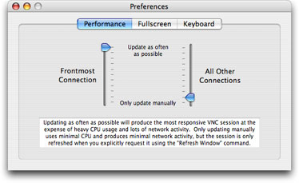
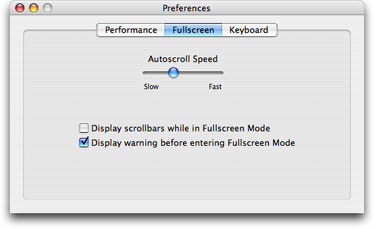
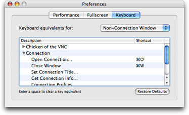

Preferences
Preferences

- Performance: Use the sliders to adjust how often your connections ask the server for updates. Generally, you want the frontmost connection to update as often as possible, while other connections can be less responsive. To force a connection to never update unless requested by choosing Refresh from the Window menu, set the slider to Only Update Manually.

- Autoscroll Speed: Controls how quickly your fullscreen connection scrolls when the mouse is moved to the edge of your screen.
- Display Scrollbars While in Fullscreen Mode: Controls whether scrollbars are displayed for fullscreen connections. They aren't necessary, since you can use the Autoscroll feature, but sometimes its nice to have an explicit scrollbar.
- Display Warning Before Entering Fullscreen Mode: Controls whether a warning panel is displayed before entering fullscreen mode. Since the only way to get back out of fullscreen mode is by knowing the keyboard command, the warning is an important reminder. If you're sure you know the keyboard command, you can use this to disable the warning.

- Keyboard Equivalents: Use this section to change the keyboard equivalents for various menu commands for different connection scenarios. The popup menu controls the scenario. Non-Connection Window is the scenario in which a window other than a VNC connection is the frontmost window. In other words, something like the Connection dialog or the preferences window is frontmost. Windowed Connection is the scenario in which a VNC connection in a window is frontmost. Fullscreen Connection is the scenario in which Fullscreen Mode is active. You can change the keyboard equivalent used to move in and out of Fullscreen Mode by changing it in both the Windowed Connection and Fullscreen Connection scenarios.
- Keyboard Equivalent Table: Change a keyboard equivalent by navigating to the desired menu command and double-clicking the Shortcut next to it. Press the keyboard equivalent you wish to use, or press Space on your keyboard to remove an equivalent.
- Restore Defaults: Use this to restore the default keyboard equivalents. These are the standard keyboard equivalents when a non-connection window is frontmost, and no keyboard equivalents other than to switch in and out of Fullscreen Mode whenever a connection is frontmost.